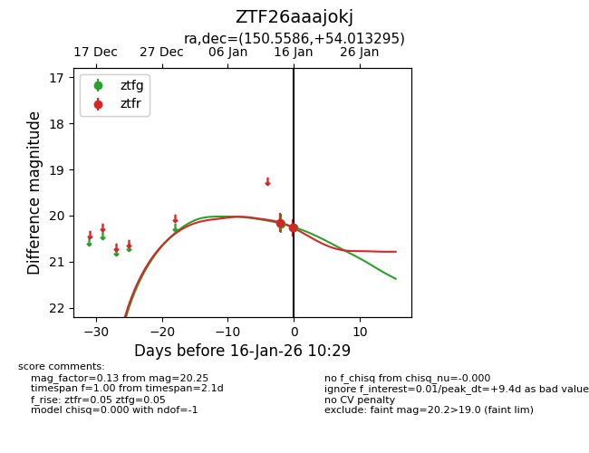
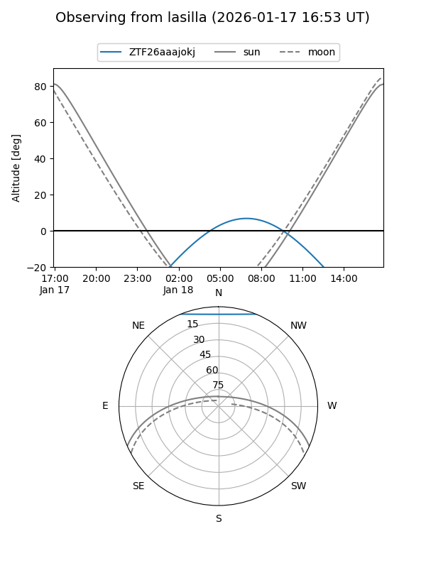
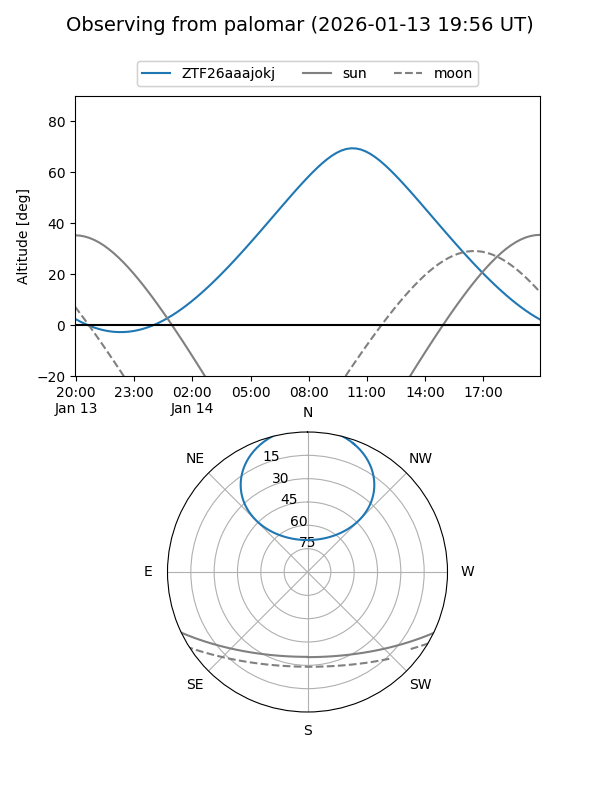
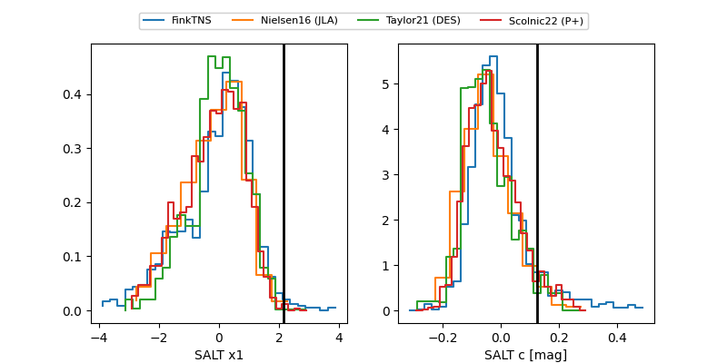

ZTF26aaajokj
Target ZTF26aaajokj at 2026-01-16 08:31
Aliases and brokers:
FINK: link
Lasair: link
ALeRCE: link
alt names
ZTF26aaajokj (ztf,fink_ztf)
Coordinates:
equatorial (ra, dec) = 150.5586,+54.01329
equatorial (HMS+DMS) = 10:02:14.07,+54:00:47.86
galactic (l, b) = (160.0813,+49.09087)
Flags:
Photometry:
last ztfg=20.17, ztfr=20.26
1 ztfg, 2 ztfr detections
Lightcurve

Visibility


Additional plots
